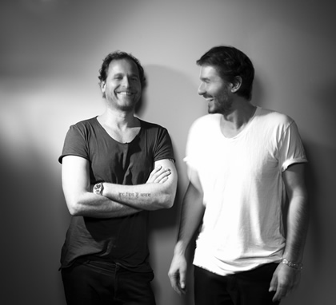

Tiefschwarz: “It's a brilliant time in electronic music”

With more than 15 years history in dance music that stretches back to the mid 90s, brothers Ali and Basti Schwarz AKA Tiefschwarz have certainly established a certain staying power, with plenty of fuel left in the tank yet. Looking towards the pair’s hometown of Berlin to get an idea, on the weekend before I Voice got on the phone with Ali, he’d gigged at the Beats & Boats Festival during the day, followed by a set at Berlin institution Watergate, which he then followed with a Sunday adventure to the Panorama Bar. “A very Berlin weekend,” as Ali puts it.
This week the brothers also saw the release of their shiny new Renaissance: The Mix Collection double-disc mix. It sees the pair adopting the tried-and-tested format of both a downbeat and club mix over the two discs, which also allowed them a free and open approach terms of experimenting across their mixes. It also carries their new single on Renaissance Voices.
It’s the latest in a career that’s seen their sound consistently evolving in a fashion that’s kept them on the cusp of underground house.
I Voice got on the phone with Ali from Tiefschwarz to find out more about their Renaissance mix, and to see how they’re travelling in 2013.
I know Tiefschwarz also played some recent gigs in the US.
My brother Basti just got back today, we split up once in a while for our DJ gigs. He was playing in New York at Resolute, an amazing outdoor roof terrace in Brooklyn, and then he went to the Wavefront festival in Chicago, and then onto Texas. He said he had a really amazing time.
Are you drawing a good crowd to your shows in the states at the moment?
We’ve been playing in the States for more than ten years, but it’s still building all the time. Things work differently in the States. Promoters work differently. It’s a different vibe, and a different workflow. So it takes a while to adapt to everything, and get both sides at the same pace. But the scene is still constantly growing. Even the commercial scene, the whole ‘EDM’ thing. I personally don’t enjoy the music, but it brings people closer to electronic culture in general. Of course it’s very commercial, but it also opens up all these niches for the underground side of things. And it really does help.
{kind=link}

You can see that it what’s happening in Ibiza right now. Big changes. Most of the big nights are run by really cool, credible artists, who stand for quality music...It seems like there’s lots of positive change at the moment.
You can see that it what’s happening in Ibiza right now. Big changes. Most of the big nights are run by really cool, credible artists, who stand for quality music. Whether it’s Guy Gerber or Solomun or Jamie Jones, it’s all about really good music. The more commercial side of the story is still there, but it’s increasingly left and right outside of the centre.
What’s also great is the variety of electronic music is so big. You have proper techno, the Ben Klock and Marcel Dettman side of the story, and you have Soul Clap who have a very rich, soulful vocal kind of production. So many artists, they’re all relevant and they all stand for quality. It’s a brilliant time in electronic music. Even Richie Hawtin with his ‘Enter.’ parties, he brings way more friends with his lineups now, it goes from A to Z and it’s not just about techno.
Tell us how you got involved with compiling the latest Renaissance release?
We got an email first, and then a phone call, and that was the beginning of the year. And we were like, ‘wow’, it’s really nice they would consider us. And then we took a closer look into the project, and the artists who where involved before.
What really convinced us was the previous artist was Tale of Us, as we really loved the mix and we love their music. It felt perfect to do the follow up. So we started talking, and it was a very smooth process, they were really professional and helpful. We were happy with the mix, they were happy with the result, so far so good. The partnership was very, let’s say ‘positive’.
You weren’t afraid to slow it down a bit and play around with sounds across the mix.
The deeper mix in particular was something more eclectic, and it gave us a lot of pleasure because it allows you to go a bit off-centre, where it’s more about atmosphere and just about peak-time delivery.
{kind=link}
And the club mix itself, while it has a few tracks that are happening right now, the kind of music everybody loves to hear in a club, at the same time we tried to find a few selections that were not so obvious. I think we can be quite happy with the result.
You’ve been working together for coming up to 20 years now. You’ve continued to evolve in that time, though there’s still something very recognizable about Tiefschwarz.
That’s kind of something we’re always working on. First of all, we don’t want to get bored with our own music, we need to refresh and rebuild our own ideas. There’s also the inspiration that comes from playing around with different genres.
Basically it’s all about house, and the four-to-the-floor bass drum kind of thing, though we can go from techno to deep house, from more electro styles to vocal house. We kind of cover the whole universe of house music, and that keeps it interesting for us. But this is something we also see happening right now in dance music, the genres are mixing up with each other, and that keeps it very diverse and interesting. It’s a typical mark for Tiefschwarz, to always be redefining our sound. Of course you need to find your filters and your own taste, but there’s too much good stuff out there to ignore.
Las year we saw the Hurricane and No Message EPs from you guys. What else are you working on at the moment?
We just finished the single for Voices for Renaissance. And we’re actually in the studio a lot at the moment, because we’re working on our new album. We’ve also completed a few new remixes, and a new single for our own Souvenir label, though our main focus is the new album material. And that’s really interesting. It’s gonna be a lot of vocal tracks; it’s hard to talk about it right now as we’re not that far into it, but we can feel the rough shape taking place already.
Next Ibiza Shows
09th August - Flying Circus @ Sankeys Ibiza
20th September - Flying Circus @ Sankeys Ibiza